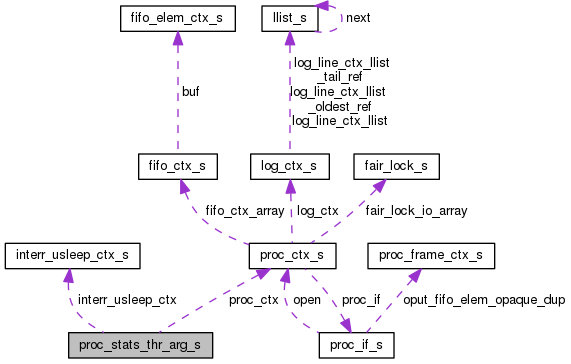

MediaProcessors
Main Page
Related Pages
Classes
Files
Class List
Class Index
Class Hierarchy
Class Members
Public Attributes
|
List of all members
proc_stats_thr_arg_s Struct Reference
Collaboration diagram for proc_stats_thr_arg_s:

[
legend
]
Public Attributes
proc_ctx_t
*
proc_ctx
interr_usleep_ctx_t
*
interr_usleep_ctx
Detailed Description
Processor's statistic thread argument.
Definition at line
75
of file
proc.c
.
The documentation for this struct was generated from the following file:
proc.c
Generated by
1.8.11
 1.8.11
1.8.11